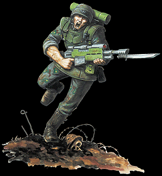

Imperial Forces |
Force Disposition Introduction |
Ork Forces |
|
 Renowned for their efficiency, the Cadians are born soldiers. Having been invaluable in quelling the rebellion of the Phranxian moons, a mere sector away from Armageddon, fifteen regiments of Cadian Shock troops were immediately shuttled en masse to the thick of the fighting on Armageddon Secundus. After six days of constant battle without sleep, the Cadians were still the first to volunteer for the extremely hazardous duty of stemming the Ork reinforcements heading for Acheron. The Cadians approached the task with characteristic speed and discipline. However, the Imperial intelligence reports of the magnitude of the Ork force heading from the north was woefully innacurrate. Kroksnik's Deth Traks, a force comprising of four full warbands and a staggering thirty-two Battle Fortresses, were heading at full speed toward Hive Acheron under orders to break the Imperial siege around the hive. The military might of the Cadians, now too far from Acheron to expect rapid reinforcement, was already committed to the defence of this region. |
| ||||||||||||||||||||||||||||||||||||||||||||||||||
|
When the true magnitude of the mobilised Ork Force was realised, the Armageddon Command Guard ordered the infantry companies of Cadia to fall back, reasoning that there was no way they could stop the vast blitzkrieg of rolling fortresses heading directly towards them. Colonel Nudd respectfully requested they reconsidered the order, even after the folly of his suggestion was pointed out to him. Nudd politely refused to withdraw, asking only that a small squadron of Marauder Bombers be dispatched to his aid. Nonplussed, the Command Guard aquiesced. Wing Commander Mecchio, decorated many times over for his skill under massed anti-aircraft fire, was assigned to lead the bombing raid. The Cadians had only seven hours before the Orks' massive guns pounded them into dust. After establishing a perimeter of scouts across the massive road sections leading into Acheron, Nudd found that the Orks had to cross Rayleigh Ford, a low, wide bridge with heavily reinforced supports. Reasoning the bridge was his only real chance of slowing down the Ork Battle Fortresses, Nudd ordered his Leman Russ tanks to head west and send a preliminary barrage into the supports of the low bridge. It was of vital importance that the bridge was merely weakened and not destroyed, otherwise the Orks would divert their forces, avoiding the Cadians entirely. In a display of controlled fire worthy of the Semtexian Bombadiers, Nudd's battle cannons thundered fire into the bridge's robust supports, stopping just short of felling the enormous construction. Colonel Nudd himself decreed that he would be the bait for the trap he had set. Leading his platoon onto the bridge, Nudd and his men stood in parade formation on the south end of the bridge, his tanks arrayed behind him in a silent line of grey metal stretching as far as the eye could see on each side. The Cadians stood in perfect formation under the scorching, burning sun for a full five hours, prayers to the Emperor on their parched lips. Nudd's timing had to be impeccable, or else every one of his men stationed here would die before sunset. What the Cadians assumed to be the blessed onset of dusk actually turned out to be the dust trails of thirty-two fully armoured Battle Fortresses, each carrying Orks without number. Even the smallest of the fortresses was twice the size of a Land Raider, bikes and warbuggies speeding around them like insects. As they drew ever closer, the ground began to shake underneath the Cadian's boots. To Colonel Nudd's immense relief, he saw that the vehicles were all painted red. As the first three Battle Fortresses sped side by side onto the bridge, intent on crushing the life out of the tiny humans arrayed before them like toy soldiers, the gargantuan structure began to groan and scream like a man in agony. The bridge held, even under the incredible weight of the Battle Fortresses. But when the metal behemoths loomed so close to the Cadian lines that they blotted out the setting sun, the bridge collapsed. Having formed a roadblock out of the first wave of Battle Fortresses ditched into Rayleigh Ford, Nudd saw his plan had worked. Although over a hundred of his men had died in the bridge's collapse, the Cadians were now in a perfect position to assault the stunned Orks piling their vehicles into the rear of the first transports to cross the bridge, as the roar of jet engines heralded the arrival of Wing Commander Martin's bombers. The bridge shook continuously with thunderous impacts and the rear of the two-mile-long Ork column erupted in incandescent flame as the Marauders went about their business. To date, the battle of Rayleigh Ford still rages, and the Cadians have now lost a full twelve regiments to overwhelming Ork numbers. However, they have fought Kroksnik's Deth Traks to a standstill, and there is now no chance they will break through to reach Archeron. Sadly, Colonel Nudd is missing in action. Cadians on Armageddon The Cadian Shock Troops assigned to Armageddon Secundus have lost the majority of their number in bitter front line fighting. As efficient and deadly as the Cadian regiments are, they have been assigned to stop the rampaging Battle Fortresses of Warlord Kroksnik's "Deth Traks" army, and the two forces have fought each other to a standstill. Although this has stopped Kroksnik reinforcing the renegade forces in Hive Acheron, a full twelve regiments of Cadia's best men have paid for this military feat with their lives. Intelligence reports indicate that the remaining Cadians are using the shattered husks of the Ork Battle Fortresses to block off the roads into Acheron. | |||||||||||||||||||||||||||||||||||||||||||||||||||